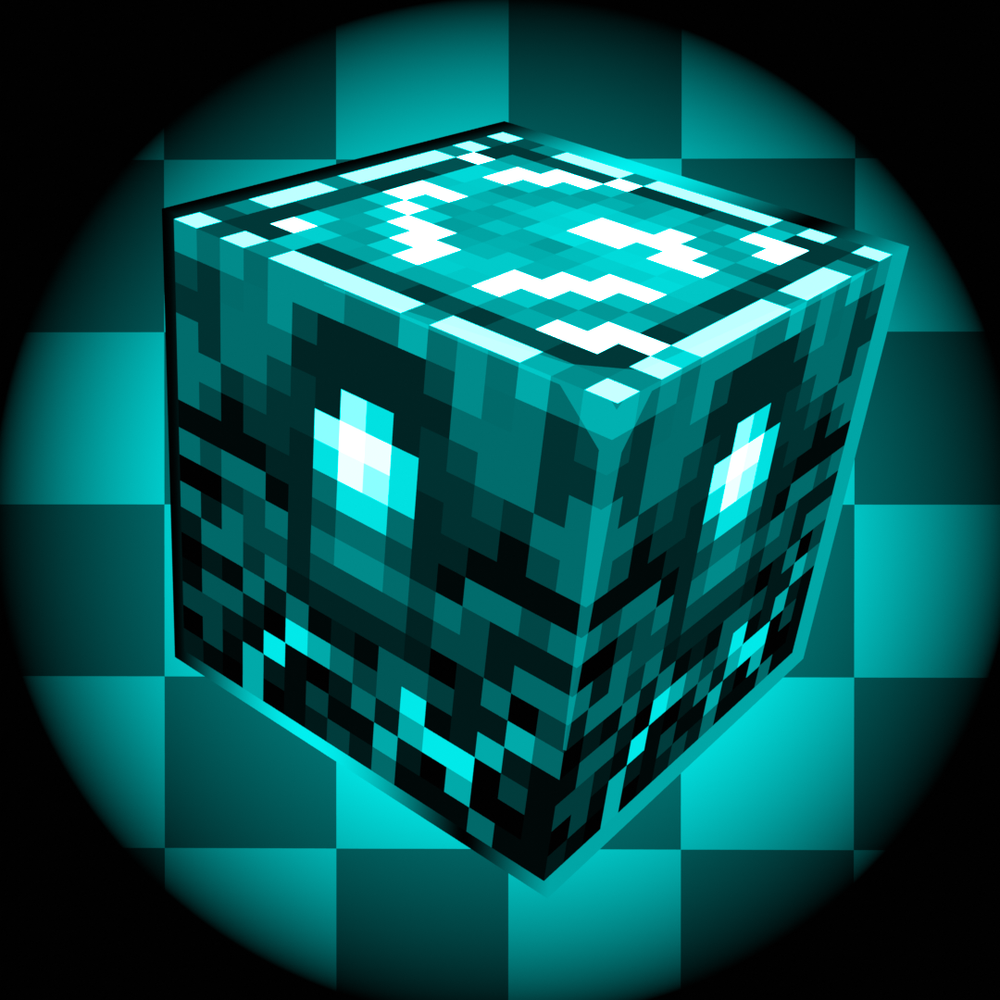

TriTotem / Totem Gaze
One of the first autototems to actually open your inventory, move your cursor towards a totem, then equip it. Speed and other factors can be modified in the config.



Requires Fzzy Config & Mod Menu for configuration
This is a clientside utility mod for Crystal PVP/Combat as well as Anchor PVP, that allows you to use crystals and anchors to their full potential without the hassle of rattling your brain to the core.
If installed serverside, this mod acts as its own anti-cheat and searches for its own packet, crystalcore:crystalcore-rep, to remove you from the server. This packet will not be present if you compile the mod from source or get it from my Patreon.
You also get access to in dev features and exclusive features from the Patreon.
Patreonentirely configurable
One of the first autototems to actually open your inventory, move your cursor towards a totem, then equip it. Speed and other factors can be modified in the config.
After a full knockback hit with obsidian and end crystals in your hotbar, a nearby placeable block is found and your aim is slightly shifted to help place quick obsidian and crystal.
When you charge a respawn anchor past minimum capacity, your viewpoint flicks down to help place protection, then back up again to destroy the anchor. Speed is configurable.
While holding right click, end crystals are automatically destroyed as soon as they enter your crosshair, unless you are above the crystal or at feet level to it.
Holding right click with specific blocks, such as glowstone or obsidian, simulates a packet-accurate drag click and pairs well with the flick assists.
Custom vanilla-based sound effects play when crystal tech is performed, and the explosion sound is reworked to be less harsh. It can be changed back in config.
Configure tick randomness for most features. It is on by default and intended to avoid macro detection.
recommended settings as of August 24, 2025
If this list is inaccurate, warn others in the DISCORD. Spam clicking while using these may create duplicate packets, which can be easily detected.
High risk as of the current patch.
quick downloads
Free nonpremium JAR
Download JARNot available yet